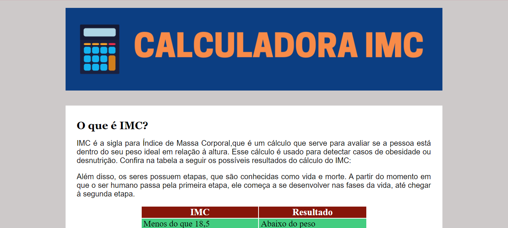

| KPOP News | |
|
Projeto desenvolvido para a matéria de Desenvolviento Web do Curso de Informática do IFMA - Campus Açailândia. O tema era livre, então resolvi fazer um blog de KPOP que iria trazer notícias e curiosidades sobre KPOP, pois esse é um tema que tenho bastante afinidade. O intuíto desse projeto era conlocar em prática todos os conhecimentos sobre HTML e CSS aprendidos durante a matéria. |
|
| Blog Meu Pão de Queijo | |
|
Projeto desenvolvido como atividade prática para a matéria de Desenvolviento Web do Curso de Informática do IFMA - Campus Açailândia. O objetivo dessa atividade era fazer com que os alunos desenvolvessem um site de tema livre e aplicassem os conceitos de JavaScript aprendidos durante a matéria. Nesse blog de receitas, o JavaScript foi aplicado a partir do conceito mostrar/esconder div, onde ao clicar no botão com a seta para baixo a receita completa será revelada e ao clicar no botão novamente, ela se retrairá. |
|
| Calculadora IMC | |
|  |
Este trabalho foi desenvolvido para a matéria de Desenvolviento Web do Curso de Informática do IFMA - Campus Açailândia. O objetivo desse exercício era desenvolver uma calculadora usando HTML, CSS e JavaScript, que recebesse a altura e o peso do usuário e calulasse o seu IMC. Com base no IMC do usuário, a calculadora também retornaria a sua classificação, podendo ser: abaixo do peso, peso normal, sobrepeso, obesidade grau 1, obesidade grau 2 e obesidade grau 3. |